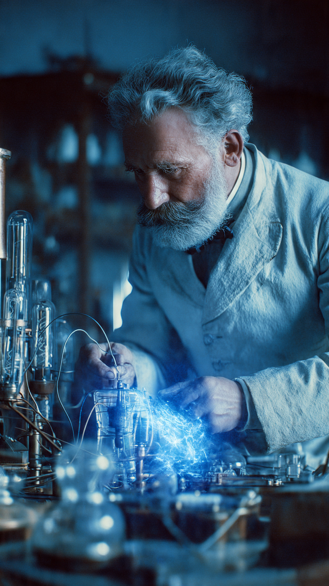
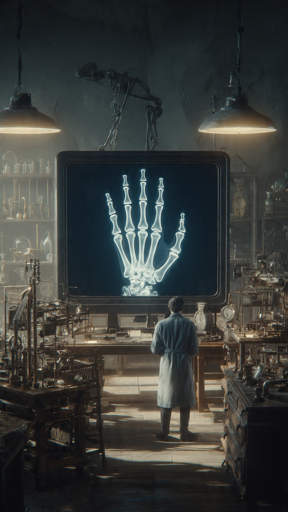

```html
كيف اكتشف العلماء الأشعة السينية بالصدفة وغيروا عالم الطب للأبد | اكتشافات وعلوم
```
في مساء الثامن من نوفمبر عام 1895، كان العالم الألماني فيلهلم كونراد رونتغن يعمل وحده داخل مختبره بجامعة فورتسبورغ.
كان المختبر هادئًا تمامًا.
لا أصوات سوى طنين الأجهزة الكهربائية، ورائحة المعادن والزجاج الساخن التي ملأت المكان.
لم يكن رونتغن يبحث عن اختراع جديد.
ولم يكن يحاول تغيير مستقبل الطب.
كل ما أراده في تلك الليلة هو دراسة نوع من الأشعة يُعرف آنذاك باسم أشعة المهبط، وهي أشعة كان العلماء يحاولون فهم طبيعتها منذ سنوات.
ولكي يحصل على نتائج دقيقة، غطى الأنبوب الزجاجي المستخدم في التجربة بورق أسود سميك، حتى يمنع أي ضوء من الخروج.
كان متأكدًا أن الغرفة أصبحت مظلمة بالكامل.
لكن بعد تشغيل الجهاز، لاحظ شيئًا لم يكن من المفترض أن يحدث أبدًا.
على طاولة تبعد عدة أمتار، بدأ لوح صغير مطلي بمادة فلورية يصدر ضوءًا أخضر خافتًا.
توقف رونتغن عن الحركة.
نظر إلى اللوح مرة أخرى.
ثم نظر إلى الجهاز.
كيف يضيء اللوح بينما الأنبوب مغطى بالكامل ولا يخرج منه أي ضوء؟
في البداية، ظن أن هناك خطأ في التجربة.
أطفأ الجهاز...
فاختفى الضوء.
أعاده للعمل...
فعاد اللوح إلى التوهج مرة أخرى.
كرر الأمر مرات عديدة.
وفي كل مرة، كانت النتيجة نفسها.
لم يكن هذا وهمًا.
كان أمام ظاهرة جديدة لم يرها أحد من قبل.
كلما اقترب رونتغن من الجهاز، ازدادت حيرته.
كانت هناك أشعة غير مرئية تخترق الورق الأسود، وتصل إلى اللوح الفلوري بسهولة.
لكن السؤال الأخطر كان:
إذا كانت هذه الأشعة تستطيع اختراق الورق...
فماذا أيضًا يمكنها أن تخترق؟
📷 الصورة رقم 1

في اليوم التالي، لم يغادر رونتغن مختبره.
أغلق الباب على نفسه، وبدأ يعيد التجربة مرة بعد أخرى.
كان مقتنعًا أن ما اكتشفه ليس مجرد خطأ في أحد الأجهزة، بل ظاهرة علمية جديدة لم يعرفها أحد من قبل.
أحضر ألواحًا من الخشب، ثم وضعها بين الأنبوب واللوح الفلوري.
لكن الأشعة استمرت في المرور.
ثم جرّب الورق السميك...
والقماش...
وحتى الكتب.
وفي كل مرة، كانت النتيجة واحدة.
كانت الأشعة تخترق معظم المواد وكأنها غير موجودة.
بدأ الفضول يزداد.
فكر في تجربة أكثر جرأة.
وضع قطعة من المعدن أمام الأشعة.
وللمرة الأولى...
توقف جزء كبير منها.
أدرك أن المعادن الكثيفة تمنع مرور هذه الأشعة، على عكس الخشب أو الورق.
لكن التجربة التي غيّرت التاريخ جاءت بعد ذلك بقليل.
طلب من زوجته آنا بيرثا رونتغن أن تساعده في تجربة غريبة.
مدّت يدها فوق لوح التصوير، بينما وجّه الأشعة نحوها لبضع دقائق.
كانت تشعر بالقلق، لكنها وثقت في زوجها.
وبعد انتهاء التجربة، بدأ رونتغن بتحميض اللوح الفوتوغرافي.
وعندما ظهرت الصورة...
ساد الصمت.
لم تظهر بشرة اليد.
ولا العضلات.
ولا أي تفاصيل خارجية.
الذي ظهر بوضوح كان عظام أصابعها، ومعها خاتم الزواج حول أحد الأصابع.
كانت أول صورة بالأشعة السينية لجسم إنسان في التاريخ.
وعندما رأت آنا الصورة، قيل إنها قالت:
"لقد رأيت موتي."
لأنها كانت تنظر إلى هيكل يدها العظمي وهي ما تزال حية.
أدرك رونتغن أن العالم يقف أمام اكتشاف قد يغيّر الطب إلى الأبد.
لكنه لم يكن يعرف بعد...
أن هذا الاكتشاف سينقذ حياة مئات الملايين من البشر في العقود التالية.
📷 الصورة رقم 2

لم يحتفظ رونتغن باكتشافه سرًا لفترة طويلة.
فبعد أسابيع من التجارب والتأكد من نتائجه، كتب بحثًا علميًا وصف فيه هذه الأشعة الغامضة.
ولأنه لم يكن يعرف حقيقتها بعد، أطلق عليها اسم "الأشعة X"، حيث كان الحرف X يُستخدم في الرياضيات للدلالة على الشيء المجهول.
والمفاجأة أن هذا الاسم بقي حتى يومنا هذا.
انتشر الخبر بسرعة مذهلة في أوروبا ثم في الولايات المتحدة.
بدأ العلماء يعيدون التجربة داخل مختبراتهم، وكانت النتيجة دائمًا واحدة.
الأشعة موجودة فعلًا.
وهي قادرة على اختراق أجزاء كبيرة من جسم الإنسان، بينما تتوقف عند العظام والمعادن.
وخلال أشهر قليلة فقط، بدأت المستشفيات تستخدمها في تشخيص الكسور، ومعرفة مكان الرصاص داخل أجسام المصابين، دون الحاجة إلى إجراء جراحة استكشافية.
كان ذلك أشبه بمعجزة بالنسبة لأطباء ذلك العصر.
ومع مرور السنوات، تطورت أجهزة الأشعة بشكل كبير.
أصبحت أسرع وأكثر دقة وأمانًا، ثم ظهرت تقنيات أخرى اعتمدت على الفكرة نفسها، مثل التصوير المقطعي والأجهزة الطبية الحديثة التي يستخدمها الأطباء يوميًا.
لقد غيّر هذا الاكتشاف طريقة تشخيص الأمراض، وساعد في إنقاذ عدد لا يُحصى من الأرواح حول العالم.
ورغم الشهرة العالمية التي حصل عليها رونتغن، فإنه اتخذ قرارًا أدهش الجميع.
رفض تسجيل براءة اختراع لاكتشافه.
كان يرى أن هذا الاكتشاف يجب أن يكون ملكًا للبشرية كلها، لا وسيلة لتحقيق الثروة.
ولو سجّل براءة اختراع، لكان من الممكن أن يصبح واحدًا من أغنى رجال عصره.
لكنه فضّل أن يستفيد منه الأطباء والمرضى في كل مكان.
وفي عام 1901، حصل فيلهلم كونراد رونتغن على أول جائزة نوبل في الفيزياء، تقديرًا لهذا الاكتشاف الذي غيّر العالم.
لكن أعظم تكريم له لم يكن الجائزة.
بل ملايين المرضى الذين أُنقذت حياتهم بفضل صورة واحدة التقطت داخل مختبر هادئ، في ليلة لم يكن يتوقع فيها أحد أن يبدأ فصل جديد في تاريخ الطب.
وهكذا...
أثبت التاريخ أن بعض أعظم الاكتشافات لم تبدأ بخطة محكمة، بل بلحظة فضول، وملاحظة صغيرة، وعالم رفض أن يتجاهل شيئًا لم يستطع تفسيره.